7 Ulysses’ Compass
7.1 The problems with parameters
説明変数が多ければ多いほどモデルのデータへの当てはまりは良くなる。しかし、既存のデータへの当てはまりがよくなりすぎると(overfitting)、新たなデータを予測する制度が低くなってしまう。一方で、シンプルすぎるモデルもうまく予測ができない(underfitting)。
7.1.1 More parameters always improve fit
ホミニンの脳容量と体重の関係を考える。
(d <-
tibble(species = c("afarensis", "africanus", "habilis", "boisei", "rudolfensis", "ergaster", "sapiens"),
brain= c(438, 452, 612, 521, 752, 871, 1350),
mass = c(37.0, 35.5,34.5,41.5,55.5,61.0,53.5)))## # A tibble: 7 × 3
## species brain mass
## <chr> <dbl> <dbl>
## 1 afarensis 438 37
## 2 africanus 452 35.5
## 3 habilis 612 34.5
## 4 boisei 521 41.5
## 5 rudolfensis 752 55.5
## 6 ergaster 871 61
## 7 sapiens 1350 53.5d %>%
ggplot(aes(x=mass,y=brain))+
geom_point(size=3.5,shape=1,color="navy")+
geom_text_repel(aes(label = species))+
scale_y_continuous(breaks = seq(600,1200,200))+
scale_x_continuous(limits = c(30,70),breaks=seq(30,70,10))+
theme(aspect.ratio=1)+
labs(x="body mass (kg)",y="brain volume (cc)",
subtitle = "Average brain volume by body\nmass for six hominin species")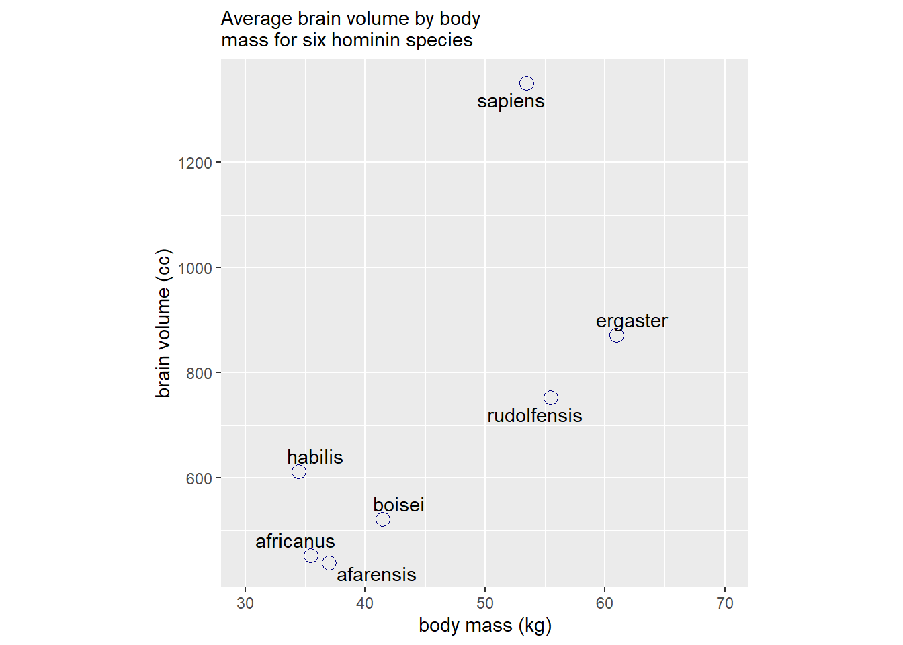
標準化する。
d %>%
mutate(M = (mass-mean(mass))/sd(mass),
B = brain/max(brain)) -> d7.1.1.1 単回帰
まずは単純な線形回帰を考える。モデルは以下の通り。
\(B_{i} \sim Normal(\mu_{i}, \sigma)\)
\(\mu_{i} = \alpha + \beta M_{i}\)
\(\alpha \sim Normal(0.5,1)\)
\(\beta \sim Normal(0,10)\)
\(\sigma \sim Lognormal(0,1)\)
b7.1 <-
brm(data = d,
family = gaussian,
formula = B ~ 1 + M,
prior = c(prior(normal(0.5, 1),class = Intercept),
prior(normal(0, 10), class = b),
prior(lognormal(0, 1), class = sigma)),
seed =7, file = "output/Chapter7/b7.1")
posterior_summary(b7.1) %>%
round(2) %>%
data.frame() %>%
rownames_to_column(var = "parameters") %>%
as_tibble()## # A tibble: 5 × 5
## parameters Estimate Est.Error Q2.5 Q97.5
## <chr> <dbl> <dbl> <dbl> <dbl>
## 1 b_Intercept 0.53 0.12 0.32 0.76
## 2 b_M 0.16 0.12 -0.09 0.39
## 3 sigma 0.27 0.12 0.13 0.58
## 4 lprior -4.72 0.15 -5.11 -4.56
## 5 lp__ -5.63 1.66 -10.1 -3.78\(R^2\)を計算する。
R2 <- function(brm_fit, seed = 7, ...) {
set.seed(seed)
p <- predict(brm_fit, summary = F, ...)
r <- apply(p, 2, mean) - d$B
1 - rethinking::var2(r)/rethinking::var2(d$B)
}
R2(b7.1,seed=7)## [1] 0.49470217.1.1.2 多項回帰
続いて、2乗項を入れたモデルを考える。
\(B_{i} \sim Normal(\mu_{i}, \sigma)\)
\(\mu_{i} = \alpha + \beta_{1} M{i} + \beta_{2} M_{i}^2\)
\(\alpha \sim Normal(0.5,1)\)
\(\beta_{j} \sim Normal(0,10) \;\; j =1,2\)
\(\sigma \sim Lognormal(0,1)\)
b7.2 <-
brm(data = d,
family = gaussian,
formula = B ~ 1 + M + I(M^2),
prior = c(prior(normal(0.5, 1),class = Intercept),
prior(normal(0, 10), class = b),
prior(lognormal(0, 1), class = sigma)),
seed =7, file = "output/Chapter7/b7.2")
posterior_summary(b7.2) %>%
round(2) %>%
data.frame() %>%
rownames_to_column(var = "parameters") %>%
as_tibble()## # A tibble: 6 × 5
## parameters Estimate Est.Error Q2.5 Q97.5
## <chr> <dbl> <dbl> <dbl> <dbl>
## 1 b_Intercept 0.61 0.26 0.1 1.15
## 2 b_M 0.19 0.16 -0.13 0.52
## 3 b_IME2 -0.1 0.26 -0.62 0.43
## 4 sigma 0.31 0.15 0.14 0.7
## 5 lprior -7.92 0.15 -8.31 -7.78
## 6 lp__ -9.54 1.99 -14.4 -7.01R2(b7.2)## [1] 0.540159同様に、3乗項～6乗項を順番に足したモデルを考える。
b7.3 <-
brm(data = d,
family = gaussian,
formula = B ~ 1 + M + I(M^2)+I(M^3),
prior = c(prior(normal(0.5, 1),class = Intercept),
prior(normal(0, 10), class = b),
prior(lognormal(0, 1), class = sigma)),
control = list(adapt_delta = .99),
seed =7, file = "output/Chapter7/b7.3")
b7.4 <-
brm(data = d,
family = gaussian,
formula = B ~ 1 + M + I(M^2)+I(M^3)+I(M^4),
prior = c(prior(normal(0.5, 1),class = Intercept),
prior(normal(0, 10), class = b),
prior(lognormal(0, 1), class = sigma)),
iter =18000, warmup=10000,thin=4,
control = list(adapt_delta = .995,
max_treedepth = 15),
seed =7, file = "output/Chapter7/b7.4")
b7.5 <-
brm(data = d,
family = gaussian,
formula = B ~ 1 + M + I(M^2)+I(M^3)+I(M^4)+I(M^5),
prior = c(prior(normal(0.5, 1),class = Intercept),
prior(normal(0, 10), class = b),
prior(lognormal(0, 1), class = sigma)),
iter=20000,warmup=18000,thin=1,
control = list(adapt_delta = .999,
max_treedepth = 15),
seed =7, file = "output/Chapter7/b7.5")6乗項を入れるときには、少し手間が必要。 \(\sigma\)を0.001に固定する。
custom_normal <- custom_family(
"custom_normal", dpars = "mu",
links = "identity",
type = "real"
)
stan_funs <- "real custom_normal_lpdf(real y, real mu) {
return normal_lpdf(y | mu, 0.001);
}
real custom_normal_rng(real mu) {
return normal_rng(mu, 0.001);
}
"
stanvars <- stanvar(scode = stan_funs, block = "functions")
b7.6 <-
brm(data = d,
family = custom_normal,
formula = B ~ 1 + M + I(M^2)+I(M^3)+I(M^4)+I(M^5)+I(M^6),
prior = c(prior(normal(0.5, 1),class = Intercept),
prior(normal(0, 10), class = b)),
iter=8000,warmup=5000,
control = list(adapt_delta = .999,
max_treedepth = 15),
stanvars = stanvars,
seed =7, file = "output/Chapter7/b7.6")7.1.1.3 plot
全ての結果を作図する。
複雑なモデルほどフィットするようになる(R2も大きくなる)ことが分かる。
#make_figure <- function(brms_fit, ylim = range(d$B)){
# r2 <- R2(brms_fit)
#nd <- tibble(M = seq(-2,2,length.out=200))
#fitted(brms_fit,newdata = nd, probs = c(0.055,0.945)) %>%
#data.frame() %>%
#bind_cols(nd) %>%
#ggplot()+
#geom_lineribbon(aes(x=M, y = Estimate,
# ymin = Q5.5,ymax=Q94.5),
# color = "black", fill="black",alpha=3/8,
# size=1)+
#geom_point(data=d, aes(x=M,y=B),
# color="navy",size=2)+
#labs(subtitle = bquote(italic(R)^2==.(round(r2, digits = 2))),
# x = "body mass (std)",
# y = "brain volume (std)") +
#coord_cartesian(xlim = c(-1.2, 1.5),
# ylim = ylim)+
#theme_classic()+
#theme(aspect.ratio=1)
#}
#p1 <- make_figure(b7.1)
#p2 <- make_figure(b7.2)
#p3 <- make_figure(b7.3)
#p4 <- make_figure(b7.4, ylim =c(.25,1.1))
#p5 <- make_figure(b7.5, ylim =c(.1,1.4))
#p6 <- make_figure(b7.6,ylim = c(-0.25,1.5))+
# geom_hline(yintercept = 0, color = "grey",
# linetype=2)+
#labs(subtitle = bquote(italic(R)^2== "1"))
#((p1|p2|p3))/((p4|p5|p6))+
# plot_annotation(title = "Figure7.3. Polynomial linear models of increasing\ndegree for the hominin data.") ->p7
p7 <- readRDS("output/Chapter7/p7.rds")
p7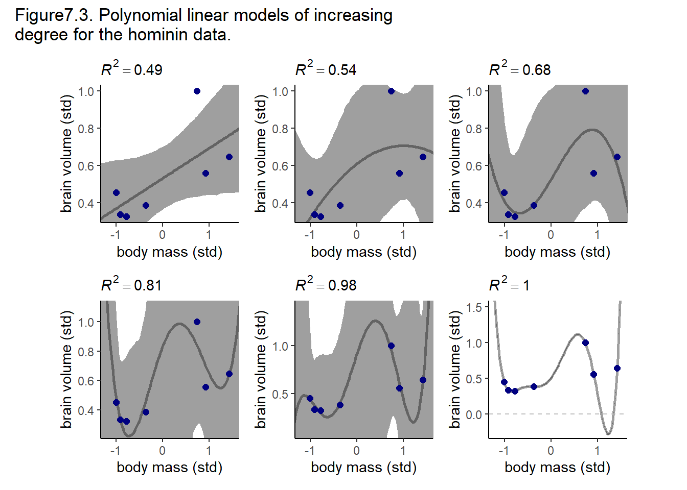
7.1.2 Too few parameters hurts too
複雑なモデルほどデータを1つ抜いた時に結果が大きく変わってしまう。一方で、シンプルなモデルは1つデータを抜いても大きく推定結果は変わらない。
brain_loo_lines <- function(brms_fit, row, ...) {
nd <- tibble(M = seq(-2,2,length.out=200))
# refit the model
new_fit <-
update(brms_fit,
newdata = filter(d, row_number() != row),
iter = 2000, warmup = 1000, chains = 4, cores = 4,
seed = 7,
refresh = 0,
...)
# pull the lines values
fitted(new_fit,
newdata = nd) %>%
data.frame() %>%
dplyr::select(Estimate) %>%
bind_cols(nd)
}
#b7.1_fits <-
# tibble(row = 1:7) %>%
#mutate(post = purrr::map(row, ~brain_loo_lines(brms_fit = b7.1, row = .))) %>%
#unnest(post)
b7.1_fits <- readRDS("output/Chapter7/b7.1_fits.rds")
#b7.4_fits <-
# tibble(row = 1:7) %>%
#mutate(post = purrr::map(row, ~brain_loo_lines(brms_fit = b7.4, row = .,
# control = list(adapt_delta = .999)))) %>%
#unnest(post)
b7.4_fits <-readRDS("output/Chapter7/b7.4_fits.rds")p1 <-
b7.1_fits %>%
ggplot(aes(x = M)) +
geom_line(aes(y = Estimate, group = row), size = 1/2, alpha = 1/2) +
geom_point(data = d,
aes(y = B),) +
labs(subtitle = "b7.1",
x = "body mass (std)",
y = "brain volume (std)") +
coord_cartesian(xlim = range(d$M),
ylim = range(d$B))+
theme_classic()+
theme(aspect.ratio=1)
# right
p2 <-
b7.4_fits %>%
ggplot(aes(x = M, y = Estimate)) +
geom_line(aes(group = row), size = 1/2, alpha = 1/2) +
geom_point(data = d,
aes(y = B)) +
labs(subtitle = "b7.4",
x = "body mass (std)",
y = "brain volume (std)") +
coord_cartesian(xlim = range(d$M),
ylim = c(-0.1, 1.4))+
theme_classic()+
theme(aspect.ratio=1)
# combine
p1 + p2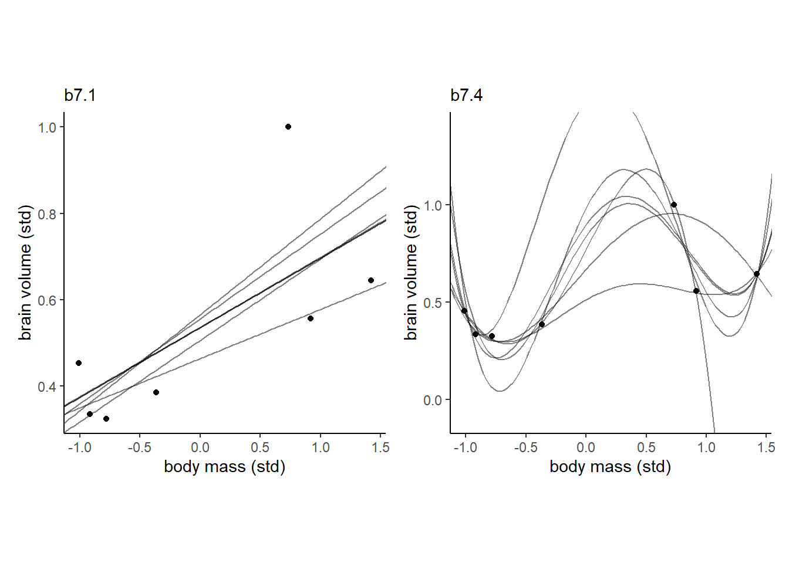
7.2 Entropy and accuracy
7.2.1 Information and uncertainty
どのようにモデルを評価すればいいだろうか。
Information theoryでは、不確実性を評価するうえで以下の指標を用いる(= Information entropy)。 ただし、\(n\)個の異なる出来事が起きる可能性がある場合、\(p_{i}\)はイベント\(i\)が起きる確率である。
\(H(p) = -Elog(p_{i}) = - \sum_{i=1}^n log(p_{i})\)
例えば、晴れと雨になる確率がそれぞれ0.3と0.7であれば、以下のようになる。
p <- c(0.3, 0.7)
-sum(p*log(p))## [1] 0.61086437.2.2 From entropy to acculacy
実際にモデルが真のモデル(target)からどの程度外れているかを評価する際には、Kullback-Leibler divergenceを用いる。KL divergenceは以下の式で与えられる。
なお、イベント\(i\)が起こる真の確率を\(p_{i}\)、あるモデルにおいてイベント\(i\)が起きるとされる確率を\(q_{i}\)とおく。
\(D_{KL}(p,q) = \sum_{i} p_{i}(log(p_{i})-log(q_{i})) = \sum_{i} p_{i}log(\frac{p_{i}}{q_{i}})\)
例えば、p = {0.3, 0.7}のとき、qによってdivergenceがどのように変化するかを調べると以下のようになり、真の値から遠ざかるほど大きくなることが分かる。
D <- tibble(
p_1 = 0.3,
p_2 = 0.7,
q_1 = seq(0.01,0.99,by = 0.01)
) %>%
mutate(q_2 = 1 - q_1,
d_kl = (p_1*log(p_1/q_1))+(p_2*log(p_2/q_2)))
D %>%
ggplot(aes(x=q_1,y=d_kl))+
geom_line(color="navy",size=1)+
geom_vline(aes(xintercept = p_1),linetype="dashed")+
annotate(geom="text",x=0.4,y=1.5,label="q = p")+
theme(aspect.ratio=1)+
labs(x = "q[1]", y = "Divergence of q from p")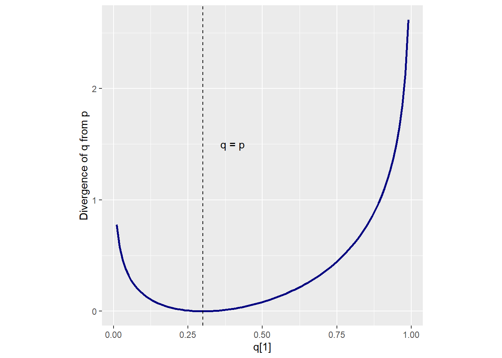
7.2.3 Estimating divergence
真のモデルが未知な状態(\(p_{i}\)が未知)で\(divergence\)は推定できないが、異なるモデル同士の\(divergence\)の差を求めることはできる(\(p_{i}\)が打ち消されるので)。その際、そのモデルの平均対数尤度さえわかればよい。
そこで、以下の値を求める(\(\frac{1}{n}\)倍していないので、平均対数尤度のn倍値である)。
\(S(q) = \sum_{i} log(q_{i})\)
ベイズ統計では、事後分布を用いてlog-pointwise-predictive-densityを用いることで対数尤度を求める。
なお、以下で\(y\)はデータを、\(\theta\)はパラメータを、Sはiterationの数を表す。
\(lppd(y, \theta) = \sum_{i} log\frac{1}{S} \sum_{s}p(y_{i}|\theta_{s})\)
lppd <- function(brms_fit) {
log_lik(brms_fit) %>%
data.frame() %>%
pivot_longer(everything()) %>%
mutate(prob = exp(value)) %>%
group_by(name) %>%
summarise(log_prob_score = mean(prob) %>% log()) %>%
summarise(lppd = sum(log_prob_score))
}
lppd(b7.1)## # A tibble: 1 × 1
## lppd
## <dbl>
## 1 1.367.2.4 Scoring the right data
対数尤度も\(R^2\)と同様にモデルが複雑なほど大きくなってしまう。-> brmsの結果だと少し変…?
#tibble(name = str_c("b7.", 1:6)) %>%
# mutate(brms_fit = purrr::map(name,get)) %>%
#mutate(lppd = purrr::map(brms_fit, lppd)) %>%
#unnest(lppd) -> t_lppd
readRDS("output/Chapter7/t_lppd.rds")## # A tibble: 6 × 3
## name brms_fit lppd
## <chr> <list> <dbl>
## 1 b7.1 <brmsfit> 1.36
## 2 b7.2 <brmsfit> 0.722
## 3 b7.3 <brmsfit> 0.601
## 4 b7.4 <brmsfit> 0.0125
## 5 b7.5 <brmsfit> 1.22
## 6 b7.6 <brmsfit> 25.9ここで、以下のシミュレーションを考える。
1. ある真のモデル(パラメータは3個)を仮定し、そのモデルからデータを10000個生成する。
2. 生成したデータに対してパラメータをそれぞれ1~5個としたモデルをあてはめ、Devianceを計算する。これをN回繰り返す(training)。
3. 真のモデルから新たに10000回データを生成し、2で用いたモデルをあてはめ、Devianceを計算する(test)。これをN回繰り返す。
すると、training dataに関しては、パラメータの数が大きいほどDevianceも小さくなる(当てはまりがよくなる)が、test dataに関してはパラメータが3のときに最もDevianceが小さくなる。
7.3 Golem taming: regularization
overfittingを防ぐ方法の一つは、データの過学習を防ぐような事前分布を用いることである。そのような事前分布の一つがregularizing priorである。
幅の狭い事前分布を用いれば、とくにデータが少ないときにはoverfittingをある程度は防ぐことができる。ただし、あまりに狭いとunderfittingになるので注意が必要である。
7.4 Predicting predictive accuracy
実際にはtest sampleは存在しない。それでは、どのようにモデルを評価すればいいだろうか。
主要な方法としては、cross validationとinformation criteriaがある。
7.4.1 Cross validation
全てのサンプルについてLOOCVを行うのは計算が大変なため、各サンプルの重要度(事後分布に影響を与える程度)に応じて重みづけをするPareto-smoothed importance sampling(PSIS)がよく用いられる。
#lppd <- tibble(name = str_c("b7.", 1:2)) %>%
# mutate(brms_fit = purrr::map(name,get)) %>%
#mutate(lppd = purrr::map(brms_fit, loo, reloo= "T"))
lppd <- readRDS("output/Chapter7/lppd.rds")
lppd$lppd[[1]]##
## Computed from 4000 by 7 log-likelihood matrix
##
## Estimate SE
## elpd_loo -2.0 2.7
## p_loo 3.4 1.7
## looic 4.0 5.4
## ------
## Monte Carlo SE of elpd_loo is 0.2.
##
## Pareto k diagnostic values:
## Count Pct. Min. n_eff
## (-Inf, 0.5] (good) 6 85.7% 43
## (0.5, 0.7] (ok) 1 14.3% 383
## (0.7, 1] (bad) 0 0.0% <NA>
## (1, Inf) (very bad) 0 0.0% <NA>
##
## All Pareto k estimates are ok (k < 0.7).
## See help('pareto-k-diagnostic') for details.lppd$lppd[[2]]##
## Computed from 4000 by 7 log-likelihood matrix
##
## Estimate SE
## elpd_loo -2.9 1.9
## p_loo 3.6 1.3
## looic 5.8 3.7
## ------
## Monte Carlo SE of elpd_loo is 0.2.
##
## Pareto k diagnostic values:
## Count Pct. Min. n_eff
## (-Inf, 0.5] (good) 5 71.4% 36
## (0.5, 0.7] (ok) 2 28.6% 132
## (0.7, 1] (bad) 0 0.0% <NA>
## (1, Inf) (very bad) 0 0.0% <NA>
##
## All Pareto k estimates are ok (k < 0.7).
## See help('pareto-k-diagnostic') for details.7.4.2 Information criteria
もう一つが情報量基準である。
事前分布がflatなとき、overfittingによってDevianceがパラメータの2倍分だけ向上することが理論的に分かっている(see figure7.8)。AICはこれを利用して以下のようにモデルを評価する(ただし、pはパラメータの数)。
\(AIC = D_{train} + 2p = -2lppd + 2p\)
ただし、AICは以下の仮定を満たしているときにしか使えない。
1. 事前分布がflatであるか、事後分布にほとんど影響を与えないとき。
2. 事後分布が多変量正規分布に従うとき。
3. サンプル数Nがパラメータ数pよりも十分大きいとき。
＊DICは1の仮定が不要であるが、2と3の仮定は必要。
WAIC
1と2の仮定を必要とせず、Nが大きいときにはLOOCVの結果と一致する。
\(WAIC(y,\theta) = -2(lppd - \sum_{i} var_{\theta} log p(y_{i}|\theta))\)
tibble(name = str_c("b7.", 1:5)) %>%
mutate(brms_fit = purrr::map(name,get)) %>%
mutate(WAIC = purrr::map(brms_fit, WAIC)) ->r
r$WAIC## [[1]]
##
## Computed from 4000 by 7 log-likelihood matrix
##
## Estimate SE
## elpd_waic -0.9 1.7
## p_waic 2.2 0.7
## waic 1.8 3.3
##
## 1 (14.3%) p_waic estimates greater than 0.4. We recommend trying loo instead.
##
## [[2]]
##
## Computed from 4000 by 7 log-likelihood matrix
##
## Estimate SE
## elpd_waic -2.0 1.1
## p_waic 2.7 0.6
## waic 3.9 2.3
##
## 2 (28.6%) p_waic estimates greater than 0.4. We recommend trying loo instead.
##
## [[3]]
##
## Computed from 4000 by 7 log-likelihood matrix
##
## Estimate SE
## elpd_waic -3.0 0.9
## p_waic 3.6 0.4
## waic 6.0 1.8
##
## 5 (71.4%) p_waic estimates greater than 0.4. We recommend trying loo instead.
##
## [[4]]
##
## Computed from 8000 by 7 log-likelihood matrix
##
## Estimate SE
## elpd_waic -4.4 0.5
## p_waic 4.4 0.4
## waic 8.9 1.1
##
## 7 (100.0%) p_waic estimates greater than 0.4. We recommend trying loo instead.
##
## [[5]]
##
## Computed from 8000 by 7 log-likelihood matrix
##
## Estimate SE
## elpd_waic -5.1 0.5
## p_waic 6.3 0.4
## waic 10.2 1.1
##
## 7 (100.0%) p_waic estimates greater than 0.4. We recommend trying loo instead.7.4.3 overthinking: WAIC calculation
以下の例を考える。
data(cars)
head(cars)## speed dist
## 1 4 2
## 2 4 10
## 3 7 4
## 4 7 22
## 5 8 16
## 6 9 10b7.m <- brm(
data = cars,
family = gaussian,
formula = dist ~ 1+ speed,
prior = c(prior(normal(0, 100), class = Intercept),
prior(normal(0, 10), class = b),
prior(exponential(1), class = sigma)),
backend = "cmdstanr",
seed=7, file = "output/Chapter7/b7.m"
)
posterior_summary(b7.m) %>%
data.frame() %>%
rownames_to_column(var = "parameters") %>%
filter(parameters !="lp__") %>%
as_tibble()## # A tibble: 4 × 5
## parameters Estimate Est.Error Q2.5 Q97.5
## <chr> <dbl> <dbl> <dbl> <dbl>
## 1 b_Intercept -17.5 6.06 -29.3 -5.51
## 2 b_speed 3.92 0.377 3.16 4.65
## 3 sigma 13.9 1.23 11.7 16.5
## 4 lprior -22.8 1.23 -25.4 -20.6WAICを計算する。
関数を使った値とほとんど一致する。
lppd <- lppd(b7.m)[[1]]
pwaic <-
log_lik(b7.m) %>%
data.frame() %>%
pivot_longer(everything()) %>%
group_by(name) %>%
summarise(var_log = var(value)) %>%
summarise(pwaic = sum(var_log)) %>%
pull()
hand_waic <- -2*(lppd-pwaic)
hand_waic## [1] -145.3186WAIC(b7.m)##
## Computed from 4000 by 50 log-likelihood matrix
##
## Estimate SE
## elpd_waic -210.8 8.2
## p_waic 4.2 1.6
## waic 421.5 16.4
##
## 2 (4.0%) p_waic estimates greater than 0.4. We recommend trying loo instead.loo(b7.m)##
## Computed from 4000 by 50 log-likelihood matrix
##
## Estimate SE
## elpd_loo -210.9 8.3
## p_loo 4.3 1.7
## looic 421.8 16.5
## ------
## Monte Carlo SE of elpd_loo is 0.1.
##
## Pareto k diagnostic values:
## Count Pct. Min. n_eff
## (-Inf, 0.5] (good) 49 98.0% 855
## (0.5, 0.7] (ok) 1 2.0% 252
## (0.7, 1] (bad) 0 0.0% <NA>
## (1, Inf) (very bad) 0 0.0% <NA>
##
## All Pareto k estimates are ok (k < 0.7).
## See help('pareto-k-diagnostic') for details.7.5 Model comparison
7.5.1 Model mis-selection
WAICやPSISはあくまでもモデルの予測に関する指標であって、因果関係についてはなにも教えてくれない。
例えば、Chapter6での植物の成長に関するモデルを再び考える。処置後の真菌の情報を入れたモデルは、処置が植物の成長に与える影響を推測する際には不適切だが、WAICはもっとも小さい。
b6.3_h <- readRDS("output/Chapter6/b6.3_h.rds")
b6.3_htf <- readRDS("output/Chapter6/b6.3_htf.rds")
b6.3_ht <- readRDS("output/Chapter6/b6.3_ht.rds")
# WAIC
b6.3_h <- add_criterion(b6.3_h, criterion = "waic")
b6.3_htf <- add_criterion(b6.3_htf,criterion = "waic")
b6.3_ht <- add_criterion(b6.3_ht, criterion = "waic")
w <- loo_compare(b6.3_h, b6.3_htf, b6.3_ht, criterion = "waic")
print(w, simplify = F) ## elpd_diff se_diff elpd_waic se_elpd_waic p_waic se_p_waic waic
## b6.3_htf 0.0 0.0 -180.6 6.7 3.4 0.5 361.3
## b6.3_ht -20.6 4.9 -201.3 5.4 2.5 0.3 402.5
## b6.3_h -22.4 5.8 -203.0 5.7 1.6 0.2 406.0
## se_waic
## b6.3_htf 13.4
## b6.3_ht 10.8
## b6.3_h 11.3#PSIS
b6.3_h_loo <- add_criterion(b6.3_h, criterion = "loo")
b6.3_htf_loo <- add_criterion(b6.3_htf,criterion = "loo")
b6.3_ht_loo <- add_criterion(b6.3_ht, criterion = "loo")
w_loo <- loo_compare(b6.3_h_loo, b6.3_htf_loo, b6.3_ht_loo, criterion = "loo")
print(w_loo, simplify = F) ## elpd_diff se_diff elpd_loo se_elpd_loo p_loo se_p_loo looic
## b6.3_htf_loo 0.0 0.0 -180.7 6.7 3.4 0.5 361.3
## b6.3_ht_loo -20.6 4.9 -201.3 5.4 2.5 0.3 402.5
## b6.3_h_loo -22.3 5.8 -203.0 5.7 1.6 0.2 406.0
## se_looic
## b6.3_htf_loo 13.5
## b6.3_ht_loo 10.8
## b6.3_h_loo 11.3WAICの差が正規分布すると仮定すると、b6.3_htfとb6.3_htのWAICの差の99%信頼区間は以下の通り。
(w[2, 1] * -2) + c(-1, 1) * (w[2, 2] * 2) * 2.6## [1] 15.56371 66.88758WAICを標準誤差と共にプロットすると…。
w[,7:8] %>%
data.frame() %>%
rownames_to_column("model_name") %>%
mutate(model_name =
fct_reorder(model_name,waic,.desc=T)) %>%
ggplot(aes(x = waic, y = model_name,
xmin = waic - se_waic,
xmax = waic + se_waic))+
geom_pointrange(shape=21, fill = "black",color="black")+
labs(title = "WAIC with standard error",
y = NULL)+
theme(axis.ticks.y = element_blank())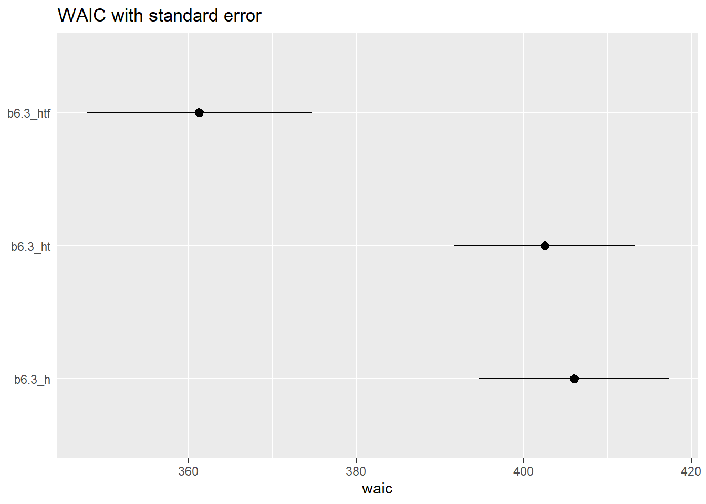
b6.3_hとb6.3_htのWAICの差の標準誤差は差そのものよりも大きい。よってこれらのモデルのWAICの間に差はほとんどないといえる。
loo_compare(b6.3_h, b6.3_ht, criterion = "waic")[2,2]*2## [1] 4.652457各モデルのWAICに基づくweightは以下のように算出する。 なお、\(\varDelta_{i}\)はWAICが最小のモデルとのWAICの差である。
\(w_{i} = \frac {exp(-0.5\varDelta_{i})}{\sum_{j} exp(-0.5\varDelta_{j})}\)
model_weights(b6.3_htf,b6.3_h, b6.3_ht, weights = "waic") %>%
round(2)## b6.3_htf b6.3_h b6.3_ht
## 1 0 07.5.2 Outlier and other illusions
Waffle Divorceの例を再び考える。
data("WaffleDivorce")
d <- WaffleDivorce %>%
mutate(D = standardize(Divorce),
M = standardize(Marriage),
A = standardize(MedianAgeMarriage))
rm(WaffleDivorce)Aのみが説明変数のモデルb5.1が最もPSISが小さいが、b5.3との差はわずかである。つまり、Mはほとんど予測を向上させない。
b5.1 <- readRDS("output/Chapter5/b5.1.rds")
b5.2 <- readRDS("output/Chapter5/b5.2.rds")
b5.3 <- readRDS("output/Chapter5/b5.3.rds")
b5.1 <- add_criterion(b5.1, criterion = "loo")
b5.2 <- add_criterion(b5.2, criterion = "loo")
b5.3 <- add_criterion(b5.3, criterion = "loo")
loo_compare(b5.1,b5.2,b5.3, criterion = "loo") %>%
print(simplify = F)## elpd_diff se_diff elpd_loo se_elpd_loo p_loo se_p_loo looic se_looic
## b5.1 0.0 0.0 -62.9 6.4 3.7 1.8 125.9 12.8
## b5.3 -0.9 0.4 -63.8 6.4 4.8 1.9 127.7 12.9
## b5.2 -6.7 4.6 -69.6 4.9 2.9 0.9 139.2 9.8教科書と違い、\(k\)が大きすぎるデータは出なかった。 0.5以上となったのは1点のみ。
library(loo)
loo(b5.3) %>%
pareto_k_ids(threshold = .5)## [1] 13d %>%
slice(13) %>%
dplyr::select(Location,Loc)## Location Loc
## 1 Idaho IDpareto_k_values(loo(b5.3))[13]## [1] 0.5123012WAICのpwaicと比較してみる。
k <- pareto_k_values(loo(b5.3))
b5.3 <- add_criterion(b5.3, "waic")
tibble(k = k,
p_waic = b5.3$criteria$waic$pointwise[,2],
Loc = pull(d,Loc)) %>%
ggplot(aes(x = k, y = p_waic, color = Loc == "ID"))+
geom_vline(xintercept = 0.5, linetype = "dashed",
alpha =1/2)+
geom_point(aes(shape = Loc == "ID"),size=2, stroke=1.5)+
geom_text(data = . %>% filter(p_waic >.5),
aes(x = k-0.05,label=Loc))+
scale_shape_manual(values=c(1,19))+
scale_color_manual(values=c("navy","red"))+
theme(legend.position="none",
aspect.ratio=1)+
labs(title = "b5.3") ->p1
p1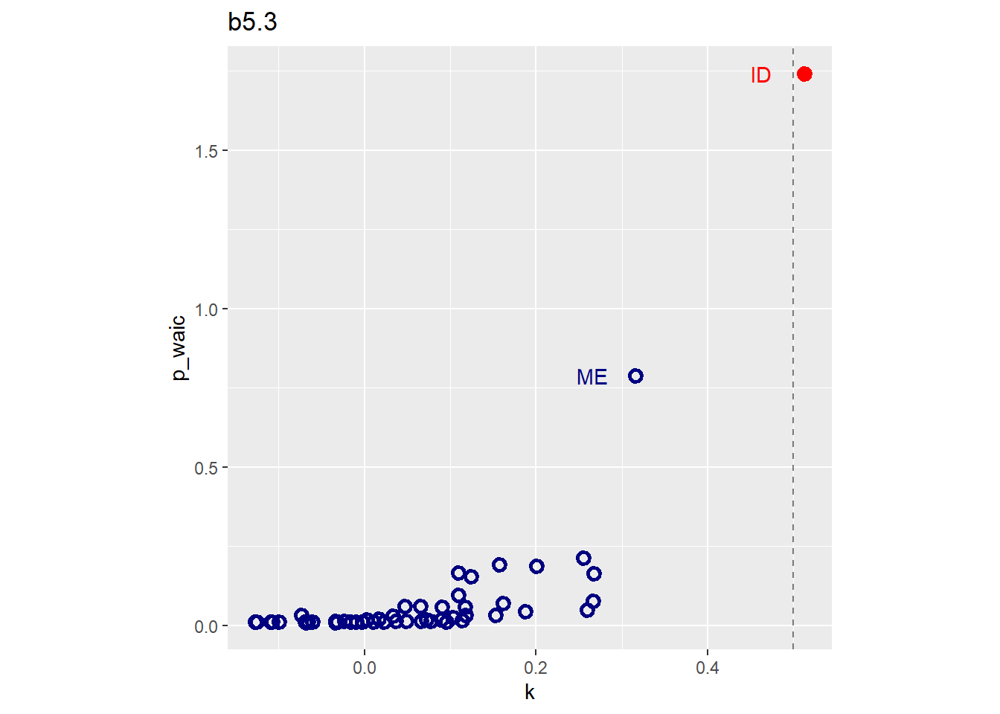
外れ値があった場合、正規分布よりも裾の広い分布を用いることでより頑強な結果が得られる。
b5.3t <-
brm(data =d,
family = student,
formula = bf(D ~ 1 + A + M, nu=2),
prior = c(prior(normal(0, 0.2),class= Intercept),
prior(normal(0, 0.5), class = b),
prior(exponential(1), class = sigma)),
backend = "cmdstanr",
seed =5, file = "output/Chapter7/b5.3t")
posterior_summary(b5.3) %>%
data.frame() %>%
round(2) %>%
rownames_to_column(var = "parameters") %>%
filter(parameters %in% c("b_Intercept","b_A","b_M","sigma")) %>%
as_tibble() ## # A tibble: 4 × 5
## parameters Estimate Est.Error Q2.5 Q97.5
## <chr> <dbl> <dbl> <dbl> <dbl>
## 1 b_Intercept 0 0.1 -0.19 0.2
## 2 b_A -0.61 0.16 -0.93 -0.29
## 3 b_M -0.06 0.16 -0.38 0.25
## 4 sigma 0.83 0.09 0.68 1.01posterior_summary(b5.3t) %>%
data.frame() %>%
round(2) %>%
rownames_to_column(var = "parameters") %>%
filter(parameters %in% c("b_Intercept","b_A","b_M","sigma")) %>%
as_tibble() ## # A tibble: 4 × 5
## parameters Estimate Est.Error Q2.5 Q97.5
## <chr> <dbl> <dbl> <dbl> <dbl>
## 1 b_Intercept 0.03 0.1 -0.18 0.23
## 2 b_A -0.7 0.15 -1 -0.41
## 3 b_M 0.05 0.2 -0.32 0.47
## 4 sigma 0.58 0.09 0.43 0.78b5.3t <- add_criterion(b5.3t,c("waic","loo"))かなり改善したことが分かる。
k_t <- pareto_k_values(loo(b5.3t))
tibble(k = k_t,
p_waic = b5.3t$criteria$waic$pointwise[,2],
Loc = pull(d,Loc)) %>%
ggplot(aes(x = k, y = p_waic, color = Loc == "ID"))+
geom_point(aes(shape = Loc == "ID"),size=2, stroke=1.5)+
geom_text(data = . %>% filter(Loc %in%c("ME","ID")),
aes(x = k-0.02,y = p_waic+0.02,label=Loc))+
scale_shape_manual(values=c(1,19))+
scale_color_manual(values=c("navy","red"))+
theme(legend.position="none",
aspect.ratio=1)+
labs(title = "b5.3t") ->p2
p1|p2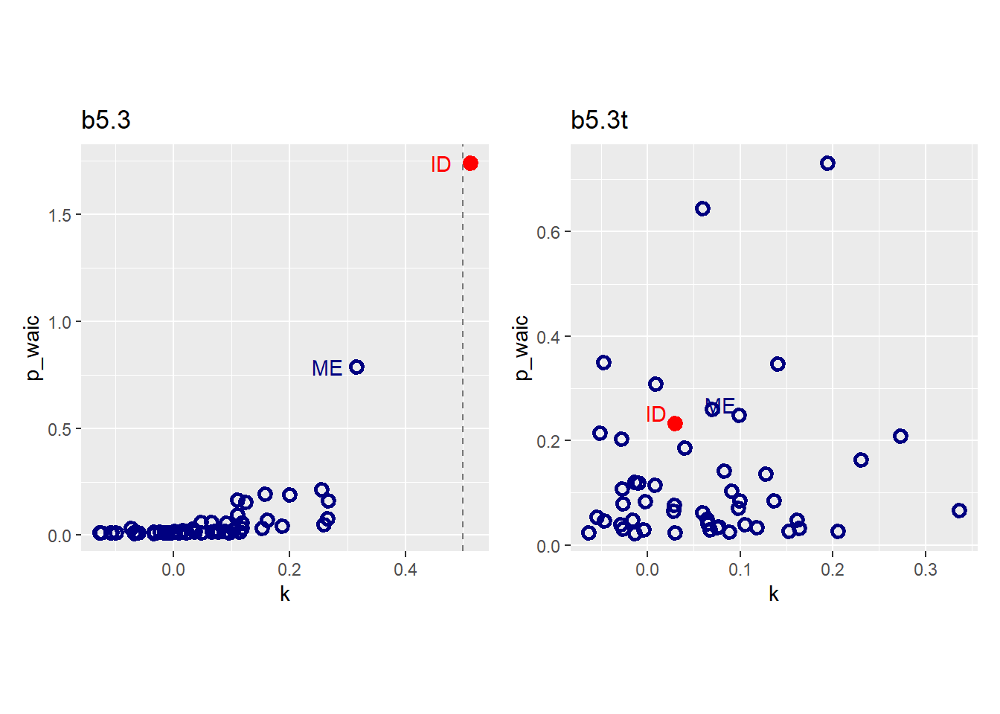
7.6 Practice
7.6.1 7E2
Suppose a coin is weighted such that, when it is tossed and lands on a table, it comes up heads 70% of the time. What is the entropy of this coin?
-(0.7*log(0.7)+0.3*log(0.3))## [1] 0.61086437.6.2 7E3
Suppose a four-sided die is loaded such that, when tossed onto a table, it shows “1” 20%, “2” 25%, “3” 25%, and “4” 30% of the time. What is the entropy of this die?
x <- c(0.2,0.25,0.25,0.3)
ent <- function(x) {
ent <- tibble(p = x) %>%
mutate(plog = p*log(p)) %>%
summarise(entropy = -sum(plog))
print(ent)
}
ent(x) ## # A tibble: 1 × 1
## entropy
## <dbl>
## 1 1.387.6.3 7E4
Suppose another four-sided die is loaded such that it never shows “4.” The other three sides show equally often. What is the entropy of this die?
#4
x <- c(1/3,1/3,1/3)
ent(x)## # A tibble: 1 × 1
## entropy
## <dbl>
## 1 1.107.6.4 7M4
What happens to the effective number of parameters, as measured by PSIS or WAIC, as a prior becomes more concentrated? Why? Perform some experiments, if you are not sure.
事前分布が狭いほど事後分布の対数尤度のばらつきも小さくなるので、WAICもPSISも小さくなる。
set.seed(2000)
library(glue)
#prior_sim <- tibble(prior_sd=rep(c(0.1,1,10),each=50)) %>%
#mutate(sample = purrr::map(1:n(),
#function(x){
#n <- 20
#tibble(x1 = rnorm(n = n),
#x2 = rnorm(n = n),
#x3 = rnorm(n = n)) %>% mutate(y = rnorm(n = n, mean =0.3 +
#0.8 * x1 + 0.6 * x2 + 1.2 * x3),
#across(everything(), standardize))
#}),
#model = purrr::map2(sample,prior_sd,
#function(df, p_sd){
#mod <- brm(y ~ 1+x1+x2+x3,
#data=df,
#family=gaussian,
#prior = c(prior(normal(0, 0.2), class = Intercept),
#prior_string(glue("normal(0, {p_sd})"), class = "b"),
#prior(exponential(1), class = sigma)),
#iter=4000,warmup=3000,seed=1234)
#return(mod)
#}))
#prior_sim %>%
#mutate(infc = purrr::map(model,
# function(mod){
# w <- suppressWarnings(brms::waic(mod))
# p <- suppressWarnings(brms::loo(mod))
#tibble(p_waic = w$estimates["p_waic", "Estimate"],
# p_loo = p$estimates["p_loo", "Estimate"])
# })) %>%
#unnest(infc) -> prior_sim
prior_sim <- readRDS("output/Chapter7/prior_sim.rds")
prior_sim %>%
pivot_longer(cols = c(p_waic, p_loo)) %>%
mutate(prior_sd = glue("sd~'='~{prior_sd}"),
prior_sd = fct_inorder(prior_sd),
name = factor(name, levels = c("p_waic", "p_loo"),
labels = c("p[WAIC]", "p[PSIS]"))) %>%
ggplot(aes(x = value)) +
facet_grid(rows = vars(prior_sd), cols = vars(name),
labeller = label_parsed) +
geom_histogram(aes(y = after_stat(density)), binwidth = 0.2) +
labs(x = "Value", y = "Density") +
theme(panel.border = element_rect(fill = NA))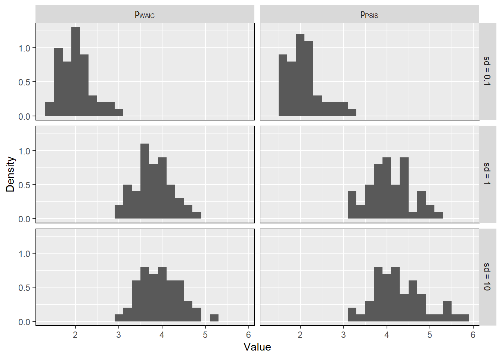
7.6.5 7H1
In 2007, The Wall Street Journal published an editorial (“We’re Number One, Alas”) with a graph of corportate tax rates in 29 countries plotted against tax revenue. A badly fit curve was drawn in (reconstructed at right), seemingly by hand, to make the argument that the relationship between tax rate and tax revenue increases and then declines, such that higher tax rates can actually produce less tax revenue. I want you to actually fit a curve to these data, found in
data(Laffer). Consider models that use tax rate to predict tax revenue. Compare, using WAIC or PSIS, a straight-line model to any curved models you like. What do you conclude about the relationship between tax rate and tax revenue.
data(Laffer)
d <- Laffer %>%
mutate(tax_rate2 = tax_rate^2,
across(everything(),standardize))
Laffer %>%
ggplot(aes(x=tax_rate,y=tax_revenue))+
geom_point(size=3,shape=21,color="navy")+
theme_classic()+
theme(aspect.ratio=1)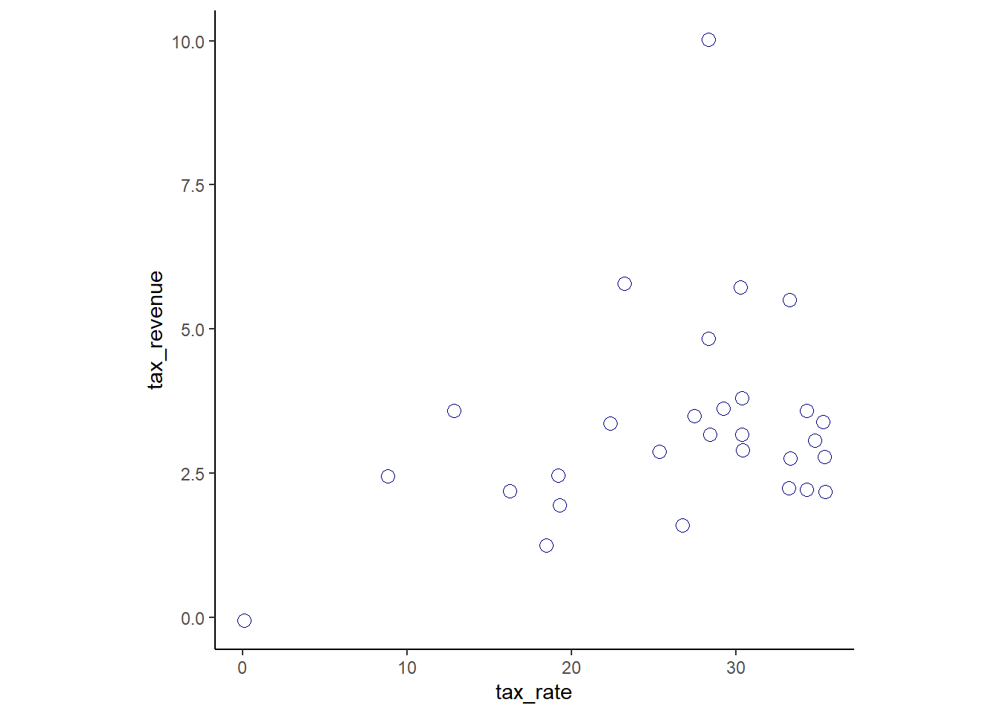
laf_line <-
brm(data = d,
family = gaussian,
formula = tax_revenue ~ tax_rate,
prior = c(prior(normal(0,0.2),class = Intercept),
prior(normal(0, 0.5), class = b),
prior(exponential(1), class = sigma)),
iter = 4000, warmup = 2000,seed = 1234,
backend = "cmdstanr",
file = "output/Chapter7/laf_line")
laf_curve <-
brm(data = d,
family = gaussian,
formula = tax_revenue ~ 1+tax_rate + tax_rate2,
prior = c(prior(normal(0,0.2),class = Intercept),
prior(normal(0, 0.5), class = b),
prior(exponential(1), class = sigma)),
iter = 4000, warmup = 2000,seed = 1234,
backend = "cmdstanr",
file = "output/Chapter7/laf_curve")
laf_spline <-
brm(data = d,
family = gaussian,
formula = tax_revenue ~ 1 + s(tax_rate),
prior = c(prior(normal(0,0.2),class = Intercept),
prior(normal(0, 0.5), class = b),
prior(exponential(1), class = sigma)),
iter = 10000, warmup =6000,seed = 1234,
thin = 2,
backend = "cmdstanr",
file = "output/Chapter7/laf_spline")
conditional_effects(laf_line, method = "fitted") %>%
plot(points = TRUE,theme =theme(aspect.ratio=1)) ->
p_line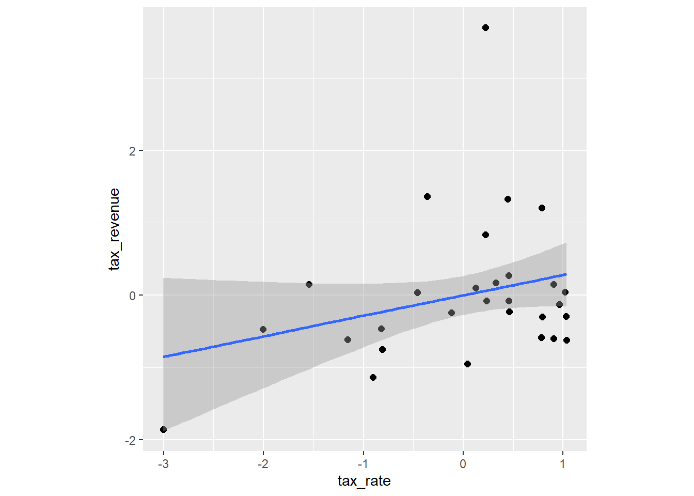
conditional_effects(laf_curve, method = "fitted",effects = "tax_rate") %>%
plot(points = TRUE,theme =theme(aspect.ratio=1))->
p_curve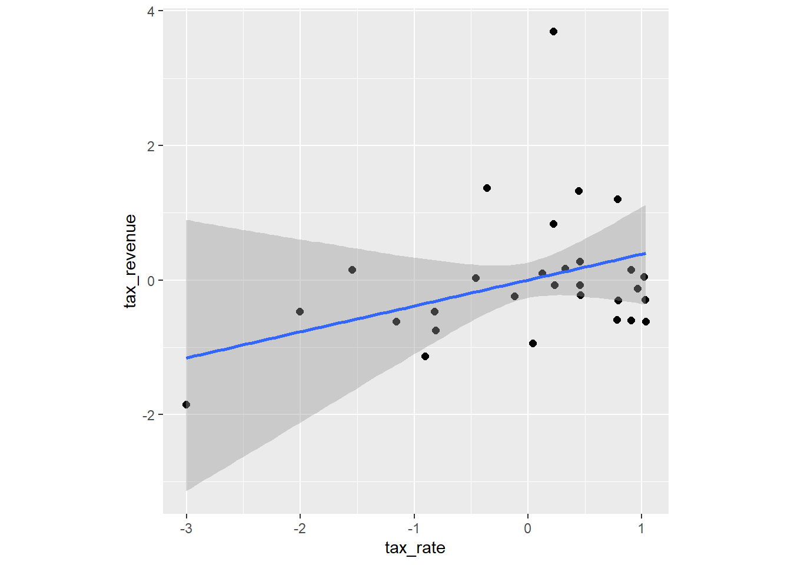
conditional_effects(laf_spline, method = "fitted") %>%
plot(points = TRUE,theme =theme(aspect.ratio=1))->
p_spline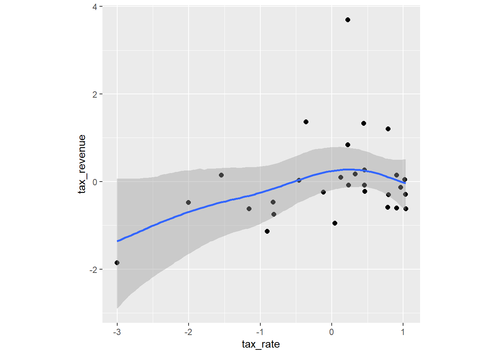
p_line$tax_rate + p_curve$tax_rate + p_spline$tax_rate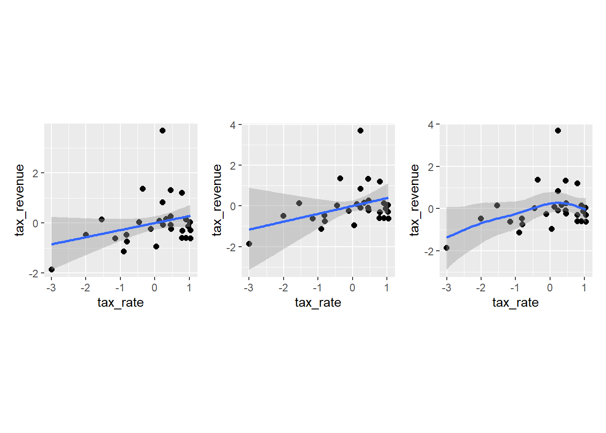
WAICとPSISを計算してみると…。
差はほとんどなく、どのモデルも大きな違いはない。
laf_line <- add_criterion(laf_line,
criterion = c("waic","loo"))
laf_curve <- add_criterion(laf_curve,
criterion = c("waic","loo"))
laf_spline <- add_criterion(laf_spline,
criterion = c("waic","loo"))
#waic
loo_compare(laf_line, laf_curve, laf_spline, criterion = "waic") %>%
print(simplify=F)## elpd_diff se_diff elpd_waic se_elpd_waic p_waic se_p_waic waic
## laf_spline 0.0 0.0 -42.2 9.1 5.3 3.6 84.4
## laf_line -1.0 0.8 -43.2 9.3 4.6 3.4 86.3
## laf_curve -1.1 0.8 -43.3 9.4 4.9 3.6 86.6
## se_waic
## laf_spline 18.2
## laf_line 18.5
## laf_curve 18.9#loo
loo_compare(laf_line, laf_curve, laf_spline, criterion = "loo") %>%
print(simplify=F)## elpd_diff se_diff elpd_loo se_elpd_loo p_loo se_p_loo looic se_looic
## laf_spline 0.0 0.0 -42.6 9.4 5.7 3.9 85.2 18.9
## laf_line -1.0 0.8 -43.6 9.6 5.0 3.8 87.2 19.3
## laf_curve -2.0 1.4 -44.6 10.7 6.2 4.8 89.1 21.37.6.6 7H2
In the
Lafferdata, there is one country with a high tax revenue that is an outlier. Use PSIS and WAIC to measure the importance of this outlier in the models you fit in the previous problem. Then use robust regression with a Student’s t distribution to revist the curve fitting problem. How much does a curved relationship depend upon the outlier point.
一方で、pareto_kが0.7以上の点があり、外れ値があったことがうかがえる。
library(gghighlight)
criteria_influence <- function(mod) {
tibble(pareto_k = mod$criteria$loo$diagnostics$pareto_k,
p_waic = mod$criteria$waic$pointwise[, "p_waic"]) %>%
rowid_to_column(var = "obs")
}
influ <- bind_rows(
criteria_influence(laf_line) %>%
mutate(type = "Linear"),
criteria_influence(laf_curve) %>%
mutate(type = "Curve"),
criteria_influence(laf_spline) %>%
mutate(type = "Spline")
)
ggplot(influ, aes(x = pareto_k, y = p_waic)) +
facet_wrap(~type, ncol = 2) +
geom_vline(xintercept = 0.7, linetype = "dashed") +
geom_hline(yintercept = 0.4, linetype = "dashed") +
geom_point() +
gghighlight(pareto_k > 0.7 | p_waic > 0.4, n = 1, label_key = obs,
label_params = list(size = 3)) +
labs(x = expression(Pareto~italic(k)), y = expression(p[WAIC])) +
theme(panel.border = element_rect(fill = NA))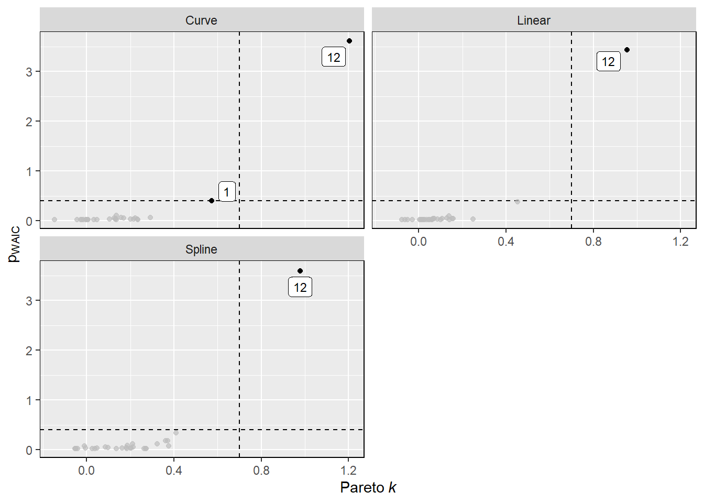
Student_tでより頑強なモデルをフィットさせる。
laf_line_st <-
brm(data = d,
family = student,
formula = bf(tax_revenue ~ tax_rate,nu=2),
prior = c(prior(normal(0,0.2),class = Intercept),
prior(normal(0, 0.5), class = b),
prior(exponential(1), class = sigma)),
iter = 4000, warmup = 2000,seed = 1234,
backend = "cmdstanr",
file = "output/Chapter7/laf_line_st")
laf_curve_st <-
brm(data = d,
family = student,
formula = bf(tax_revenue ~ 1+tax_rate + tax_rate2,nu=2),
prior = c(prior(normal(0,0.2),class = Intercept),
prior(normal(0, 0.5), class = b),
prior(exponential(1), class = sigma)),
iter = 4000, warmup = 2000,seed = 1234,
backend = "cmdstanr",
file = "output/Chapter7/laf_curve_st")
laf_spline_st <-
brm(data = d,
family = student,
formula = bf(tax_revenue ~ 1 + s(tax_rate),nu=2),
prior = c(prior(normal(0,0.2),class = Intercept),
prior(normal(0, 0.5), class = b),
prior(exponential(1), class = sigma)),
iter = 50000, warmup =40000,seed = 1234,
thin = 5,
backend = "cmdstanr",
file = "output/Chapter7/laf_spline_st")
conditional_effects(laf_line_st, method = "fitted") %>%
plot(points = TRUE, theme=theme(aspect.ratio=1)) -> pline_st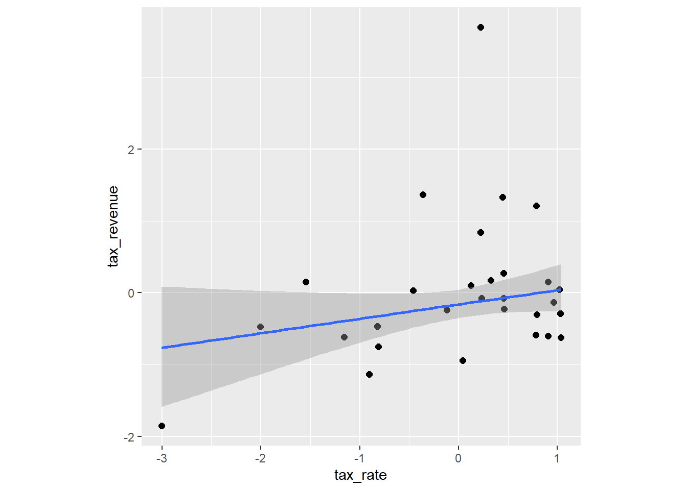
conditional_effects(laf_curve_st, method = "fitted") %>%
plot(points = TRUE) -> pcurve_st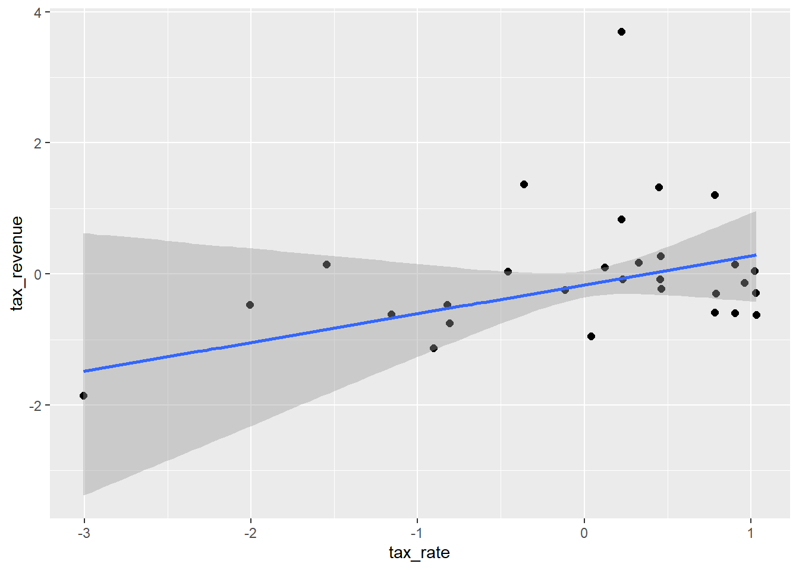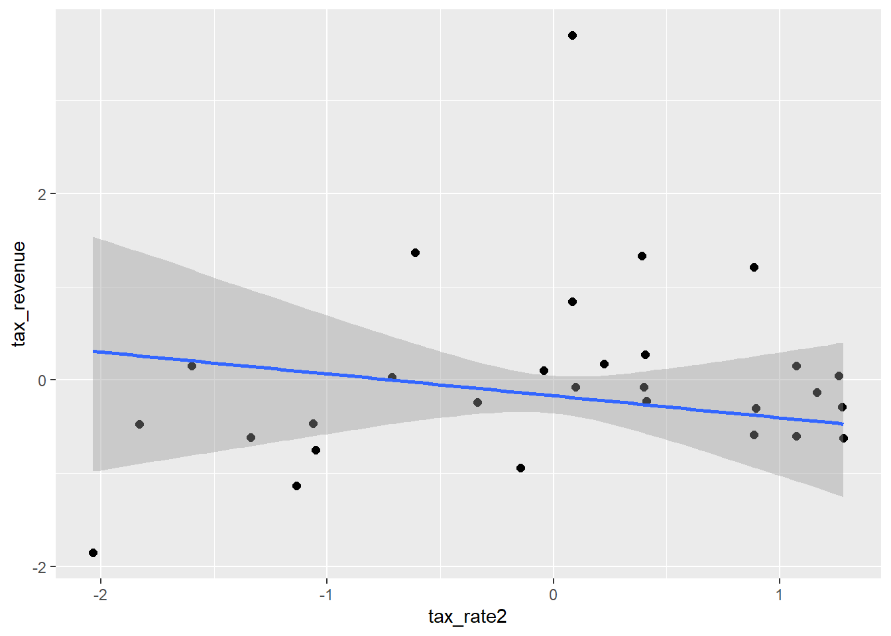
conditional_effects(laf_spline_st, method = "fitted") %>%
plot(points = TRUE) ->pspline_st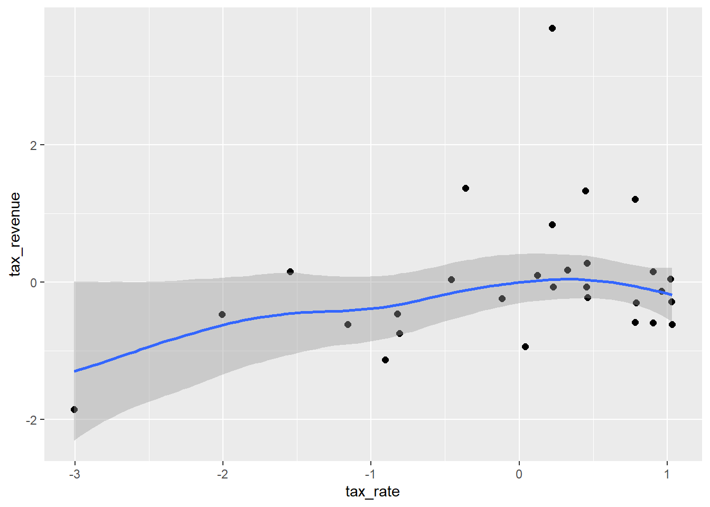
pline_st$tax_rate+pcurve_st$tax_rate+pspline_st$tax_rate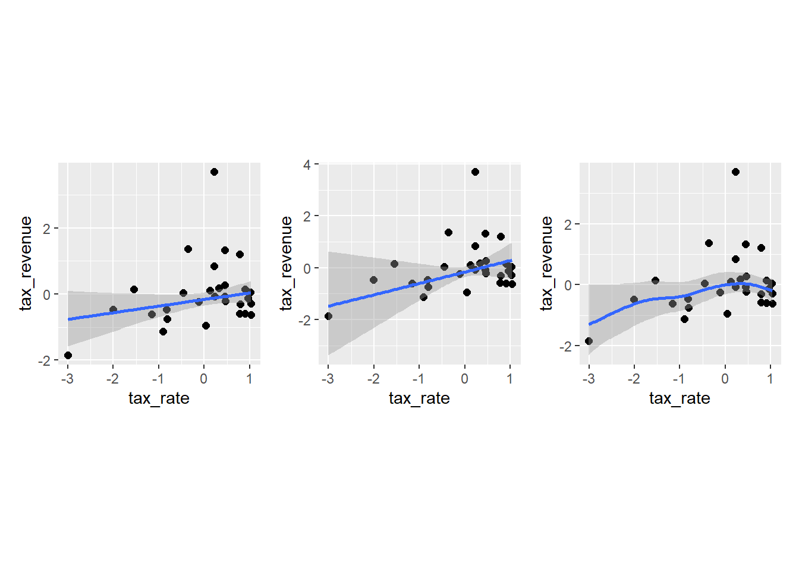
WAICとPSISを計算しても、エラーは出ない。 また、WAICとPSISの値もほぼ一致した。
laf_line_st <- add_criterion(laf_line_st,
criterion = c("waic","loo"))
laf_curve_st <- add_criterion(laf_curve_st,
criterion = c("waic","loo"))
laf_spline_st <- add_criterion(laf_spline_st,
criterion = c("waic","loo"))
#waic
loo_compare(laf_line_st, laf_curve_st, laf_spline_st, criterion = "waic") %>%
print(simplify=F)## elpd_diff se_diff elpd_waic se_elpd_waic p_waic se_p_waic waic
## laf_spline_st 0.0 0.0 -35.9 6.3 5.0 1.0 71.7
## laf_curve_st -0.6 0.8 -36.5 6.3 3.6 0.8 72.9
## laf_line_st -0.9 1.1 -36.8 6.2 3.1 0.6 73.6
## se_waic
## laf_spline_st 12.5
## laf_curve_st 12.5
## laf_line_st 12.5#loo
loo_compare(laf_line_st, laf_curve_st, laf_spline_st, criterion = "loo") %>%
print(simplify=F)## elpd_diff se_diff elpd_loo se_elpd_loo p_loo se_p_loo looic
## laf_spline_st 0.0 0.0 -35.8 6.3 4.9 1.0 71.7
## laf_curve_st -0.6 0.8 -36.4 6.3 3.6 0.8 72.8
## laf_line_st -0.9 1.1 -36.8 6.2 3.1 0.6 73.6
## se_looic
## laf_spline_st 12.5
## laf_curve_st 12.5
## laf_line_st 12.5pwaicは高い点があるものの、かなり改善している。
influ <- bind_rows(
criteria_influence(laf_line_st) %>%
mutate(type = "Linear"),
criteria_influence(laf_curve_st) %>%
mutate(type = "Curve"),
criteria_influence(laf_spline_st) %>%
mutate(type = "Spline")
)
ggplot(influ, aes(x = pareto_k, y = p_waic)) +
facet_wrap(~type, ncol = 2) +
geom_vline(xintercept = 0.7, linetype = "dashed") +
geom_hline(yintercept = 0.4, linetype = "dashed") +
geom_point() +
gghighlight(pareto_k > 0.7 | p_waic > 0.4, n = 1, label_key = obs,
label_params = list(size = 3)) +
labs(x = expression(Pareto~italic(k)), y = expression(p[WAIC])) +
theme(panel.border = element_rect(fill = NA))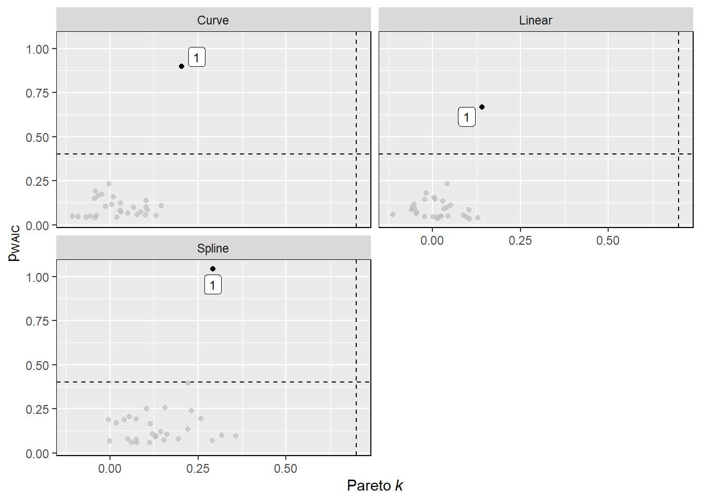
7.6.7 7H3
Consider three fictional Polynesian islands. On each there is a Royal Ornithologist charged by the king with surveying the bird population. They have each found the following proportions of 5 important bird species:
tibble(island = paste("Island", 1:3),
speciesA = c(0.2, 0.8, 0.05),
speciesB = c(0.2, 0.1, 0.15),
speciesC = c(0.2, 0.05, 0.7),
speciesD = c(0.2, 0.025, 0.05),
speciesE = c(0.2, 0.025, 0.05)) %>%
datatable()Notice that each row sums to 1, all the birds. This problem has two parts. It is not computationally complicated. But it is conceptually tricky. First, compute the entropy of each island’s bird distribution. Interpret these entropy values. Second, use each island’s bird distribution to predict the other two. This means to compute the KL divergence of each island from the others, treating each island as if it were a statistical model of the other islands. You should end up with 6 different KL divergence values. Which island predicts the others best? Why?
Island1ではもっともエントロピーが大きい。
よって、Island1で他のデータを予測するときに最もKLdivergenceが小さくなる。
islands <- tibble(island = paste("Island", 1:3),
a = c(0.2, 0.8, 0.05),
b = c(0.2, 0.1, 0.15),
c = c(0.2, 0.05, 0.7),
d = c(0.2, 0.025, 0.05),
e = c(0.2, 0.025, 0.05)) %>%
pivot_longer(-island, names_to = "species", values_to = "prop")
islands %>%
group_by(island) %>%
summarise(prop=list(prop),.groups="drop") %>%
mutate(entropy = purrr::map(prop,ent)) %>%
unnest(entropy) -> islands## # A tibble: 1 × 1
## entropy
## <dbl>
## 1 1.61
## # A tibble: 1 × 1
## entropy
## <dbl>
## 1 0.743
## # A tibble: 1 × 1
## entropy
## <dbl>
## 1 0.984islands## # A tibble: 3 × 3
## island prop entropy
## <chr> <list> <dbl>
## 1 Island 1 <dbl [5]> 1.61
## 2 Island 2 <dbl [5]> 0.743
## 3 Island 3 <dbl [5]> 0.984##KL divergence
d_KL <- function(p,q){
sum(p*(log(p)-log(q)))
}
crossing(model = paste("Island",1:3),
predicts = paste("Island",1:3)) %>%
filter(model!=predicts) %>%
left_join(islands, by=c("model"="island")) %>%
dplyr::select(-entropy) %>%
rename(model_prop = prop) %>%
left_join(islands, by = c("predicts"="island")) %>%
rename(predict_prop = prop) %>%
mutate(d_KL = map2(predict_prop, model_prop,d_KL)) %>%
unnest(d_KL)## # A tibble: 6 × 6
## model predicts model_prop predict_prop entropy d_KL
## <chr> <chr> <list> <list> <dbl> <dbl>
## 1 Island 1 Island 2 <dbl [5]> <dbl [5]> 0.743 0.866
## 2 Island 1 Island 3 <dbl [5]> <dbl [5]> 0.984 0.626
## 3 Island 2 Island 1 <dbl [5]> <dbl [5]> 1.61 0.970
## 4 Island 2 Island 3 <dbl [5]> <dbl [5]> 0.984 1.84
## 5 Island 3 Island 1 <dbl [5]> <dbl [5]> 1.61 0.639
## 6 Island 3 Island 2 <dbl [5]> <dbl [5]> 0.743 2.017.6.8 7H4
Recall the marriage, age, and happiness collider bias example from Chapter 6. Run models m6.9 and m6.10 again (page 178). Compare these two models using WAIC (or PSIS, they will produce identical results). Which model is expected to make better predictions? Which model provides the correct causal inference about the influence of age on happiness? Can you explain why the answers to these two questions disagree?
Chapter6の結婚と年齢が幸福度に与える影響についてもモデルを再度考える。
b6.4の方がWAICもPSISも小さいが、このモデルでは因果関係は推論できない。
b6.4 <- readRDS("output/Chapter6/b6.4.rds")
b6.4_2 <- readRDS("output/Chapter6/b6.4_2.rds")
b6.4 <- add_criterion(b6.4, criterio =c("waic","loo"))
b6.4_2 <- add_criterion(b6.4_2, criterio =c("waic","loo"))
loo_compare(b6.4,b6.4_2) %>%
print(simplify=F)## elpd_diff se_diff elpd_loo se_elpd_loo p_loo se_p_loo looic se_looic
## b6.4 0.0 0.0 -1356.9 18.6 3.7 0.2 2713.9 37.3
## b6.4_2 -194.0 17.6 -1551.0 13.8 2.3 0.1 3101.9 27.67.6.9 7H5
Revisit the urban fox data, data(foxes), from the previous chapter’s practice problems. Use WAIC or PSIS based model comparison on five different models, each using weight as the outcome, and containing these sets of predictor variables:
- avgfood + groupsize + area
- avgfood + groupsize
- groupsize + area
- avgfood
- area
Can you explain the relative differences in WAIC scores, using the fox DAG from the previous chapter? Be sure to pay attention to the standard error of the score differences (dSE).
b7H5_5 <- readRDS("output/Chapter6/b6H3.rds") %>%
add_criterion(c("waic"))
b7H5_4 <- readRDS("output/Chapter6/b6H4.rds") %>%
add_criterion(c("waic"))
b7H5_2 <- readRDS("output/Chapter6/b6H5.rds") %>%
add_criterion(c("waic"))
data(foxes)
dat3 <- foxes %>%
as_tibble() %>%
dplyr::select(area, avgfood, weight, groupsize) %>%
mutate(across(everything(),standardize))
## 1
b7H5_1 <-
brm(data = dat3,
family = gaussian,
formula = weight ~ 1 + area + groupsize + avgfood,
prior = c(prior(normal(0, 0.2),class=Intercept),
prior(normal(0, 0.5), class = b,),
prior(exponential(1), class = sigma)),
iter = 4000, warmup = 2000, chains = 4, cores = 4, seed = 1234,
backend = "cmdstanr",
file = "output/Chapter6/b7H5_1")
b7H5_1 <- add_criterion(b7H5_1, "waic")
## 3
b7H5_3 <-
brm(data = dat3,
family = gaussian,
formula = weight ~ 1 + area + groupsize + avgfood,
prior = c(prior(normal(0, 0.2),class=Intercept),
prior(normal(0, 0.5), class = b,),
prior(exponential(1), class = sigma)),
iter = 4000, warmup = 2000, chains = 4, cores = 4, seed = 1234,
backend = "cmdstanr",
file = "output/Chapter6/b7H5_3")
b7H5_3 <- add_criterion(b7H5_3, "waic")1,2,3はほとんど変わらない。
areaがweightに与える影響はすべてavgfoodを経由しているため、１と2は全く同じとなる。また、3も同様の理由でほとんど変わらない。
4と5も同様である。
loo_compare(b7H5_1, b7H5_2, b7H5_3,b7H5_4,b7H5_5,
criterion="waic") %>%
print(simplify=F)## elpd_diff se_diff elpd_waic se_elpd_waic p_waic se_p_waic waic se_waic
## b7H5_1 0.0 0.0 -161.4 7.7 4.4 0.7 322.8 15.5
## b7H5_3 0.0 0.0 -161.4 7.7 4.4 0.7 322.8 15.5
## b7H5_2 -0.4 1.7 -161.8 7.7 3.5 0.6 323.6 15.4
## b7H5_4 -5.3 3.4 -166.7 6.7 2.3 0.3 333.3 13.4
## b7H5_5 -5.3 3.4 -166.7 6.7 2.4 0.4 333.4 13.3